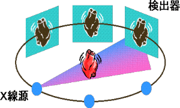

アンジオグラフィーという装置は、複数方向の血管（心臓や肺など）のX線画像を撮影できる医用診断装置です。当研究室ではアンジオグラフィーでとられたX線データを組み合わせて血管の立体構造を再構成することはできないか、という考えの下でプロジェクトが進められています。
非線形計画法の双対性と呼ばれる理論を用いて少ない投影データからCT画像を再構成する反復法の開発を行っています。少ない投影データからCT画像を再構成することができれば、(１)データ収集時間の削減、(２)被曝量の削減、(３)心臓などの動きを伴う物体の再構成、などが実現できます。また、アンギオグラフィーによる血管像の撮影のように装置の制約から少数方向の投影データしか測定できない場合もあります。このような不足したデータからの画像再構成は、数学的に以下のようの定式化できます。画像をベクトルx、投影データをベクトルy、画像xに投影データyを対応づける投影演算をAで表します。このとき画像再構成は連立方程式 Ax＝yを解きyからxを求める問題ですが、投影データが少ない場合はAx=yを満たす解が無数に存在します。そこで、評価関数f(x)を導入して、Ax=yを満たす解の中で f(x)を最小にするxを求める問題として画像再構成を定式化します。
このような非線形計画問題の解を求める高速な反復法を開発しています。具体的には、双対座標上昇法という方法を用いています。これは、非線形計画法の双対性理論というものを用いて主問題を双対問題に変換し、双対問題を反復法の１つである座標上昇法により解くことに基づいています。
具体的な適用例として、アンギオグラフィーと呼ばれる血管像の撮影システムを用いて血管の３次元画像を８方向の投影データから再構成した例を下図に示します。具体的な評価関数f(x)としては『非零の値を持つ画素の数が少ないことを表す』xの L1ノルムを用いています。この再構成問題の規模はxの次元が16,777,216、yの次元が524,288と大規模ですが、Pentium-III(700メガ)のPCを用いて１時間ほどで解けます。左側がCT画像再構成の代表的な反復法であるART法による再構成画像、右側が提案手法による再構成画像を表しています(再構成した３次元画像をコンピュータグラフィクスで立体表示したものです)。提案手法の方が明らかに良好な再構成画像が得られています。また、この方法の拡張としてxにウエーブレット変換と呼ばれる積分変換を施しそのL1ノルムを最小にする評価関数についても良好な結果を得ています。
Copyright © 2005 Image Science Lab. All rights Reserved.